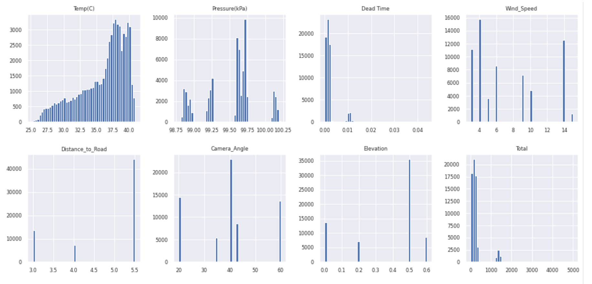
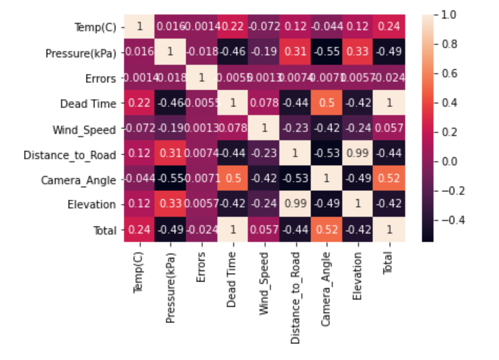
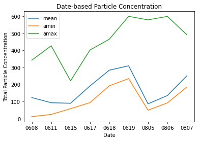
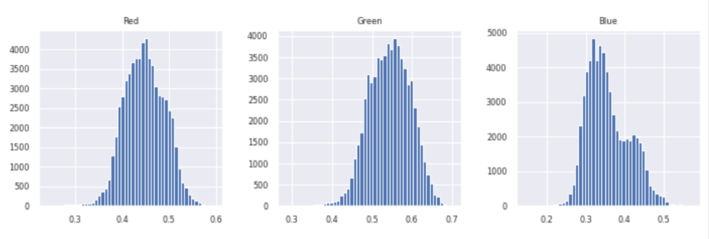
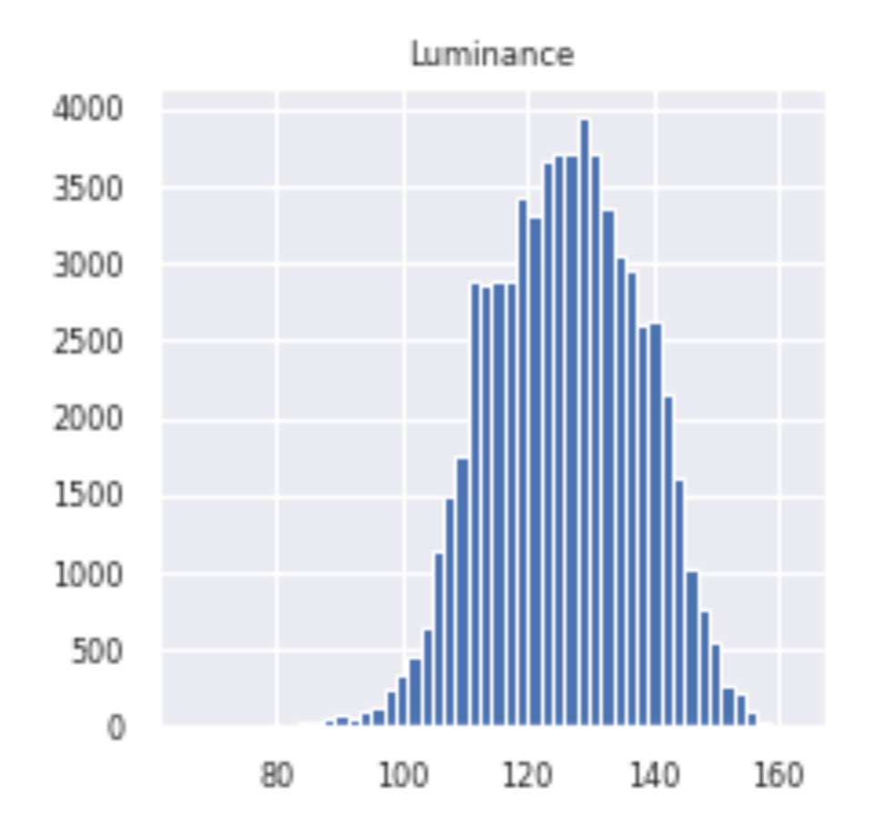
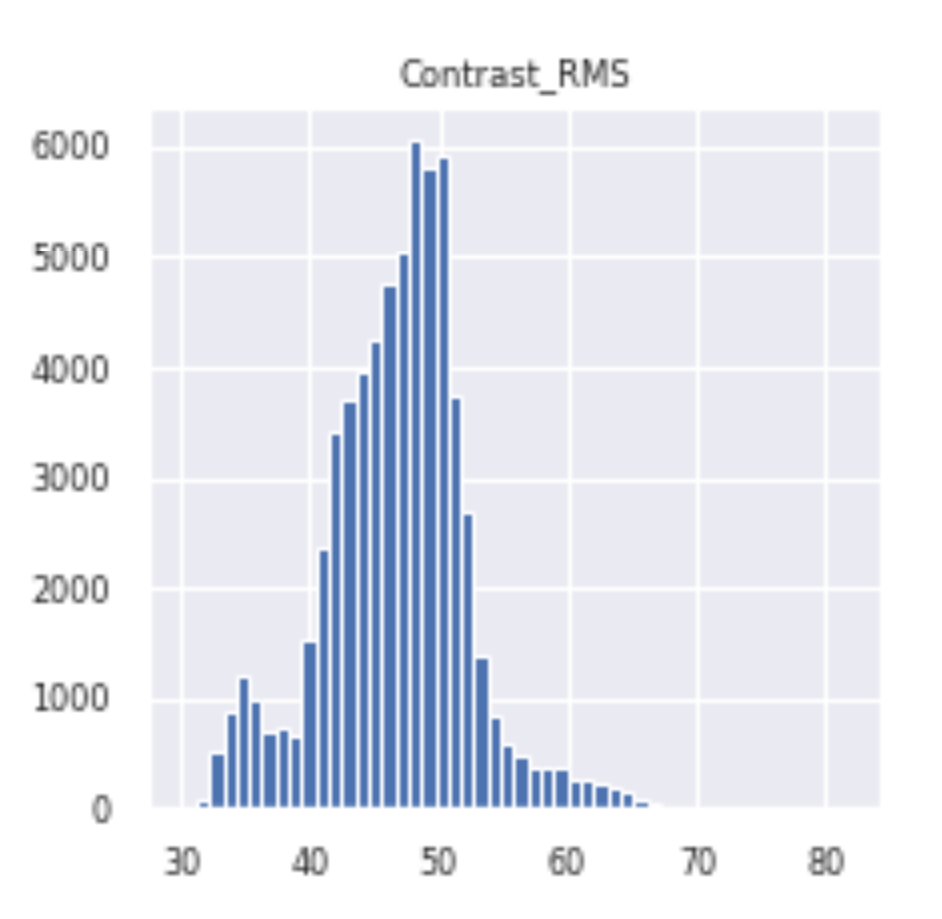
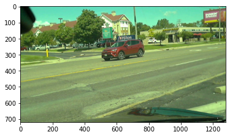
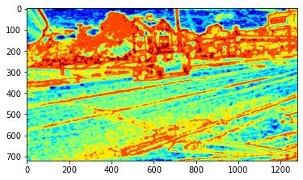
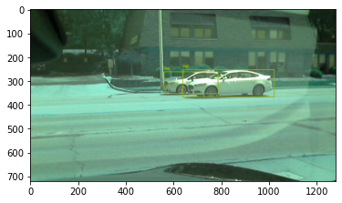
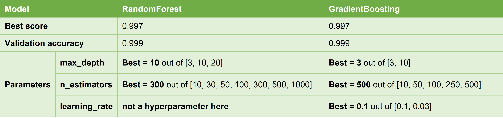

Shiyuan Wang
· Saran-Wang
Department of Civil and Environmental, University of Illinois
Weiqi Ni
· weiqini
Department of Civil and Environmental, University of Illinois; Department of Environmental and Resources, Zhejiang University
Gemma Clark
· 441gclark
Department of Civil and Environmental, University of Illinois
Xueao Li
· XueaoLi
Department of Civil and Environmental, University of Illinois
Abstract
Introduction
Literature Review
There are many studies using digital camera and advanced algorithm to estimate the concentrations of Particulate Matters. Hong et al. [1] developed a novel method of predicting the concentrations and diameters of outdoor ultrafine particles using street-level images and audio data in Montreal, Canada. Convolutional neural networks, multivariable linear regression and genralized additive models were used to make the predictions. Wong et al. 2007 present an image processing method for estimating concentrations of coarse particles (PM10) in real time using pixels acquired by an internet video surveillance camera. In this paper, the authors present formulas for predicting particulate matter based on optical physics including light absorption, scattering, and reflection. They do not use machine learning tactics to estimate pollution concentrations, but their model results in root mean square error values of around 4 µg/m3.
Exploratory Data Anlysis
Variables Explanation
Table 1: Variables Explanation
Data Fields
Explanation
Temp(C)
ambient temperature
Pressure(kPa)
air pressure
Rel. Humidity
relative humidity
Errors
if the air measurement equipment has error during sampling (0=no)
Alarm Triggered
if any instrumental warning shows during sampling (0=no)
Dilution Factor
an instrumental parameter (should close to 1)
Dead Time
another instrumental parameter (ideally close to 0)
Median, Mean, Geo. Mean, Mode, and Geo. St. Dev.
parameters describe particle sizes, which can be ignored
Total Conc.
an output variable from the instrument that should not be used
image_file
the visual information of the traffic condition, corresponding to an image in the “frames” directory
Wind_Speed
the wind velocity during sampling
Distance_to_Road
the distance between camera and road
Camera_Angle
the angle of incidence between the camera and the road
Elevation
the elevation between the camera and the breathing zone
Total
the total measured particle number concentration (# / cm3) This is the dependent variable
Data Cleaning
Delete the useless columns in the dataset
The first column titled unnamed is meaningless.
The columns titled Median, Mean, Geo. Mean, Mode, and Geo. St. Dev. are parameters describing particle sizes, which can be ignored.
The column titled “Total Conc.(#/cm³)” is an output variable and should not be used.
Delete the rows with equipment error during sampling
train = train[train[‘Errors’] == 0].reset_index(drop=True), only keep the rows with no error (value = 0)
train = train[train[‘Alarm Triggered’] == 0].reset_index(drop=True), only keep the rows with no warning (value = 0)
Visualization of the distributions of varibales
Figure 1 shows that “Wind_Speed”, “Camera_Angle”, “Distance_to_Road” and “Elevation” are all in discrete distributions, while “Temp(C)” are in continuous distribution. “Pressure(kPa)” has four clusters. It should also be noted that the “Dead Time” almost shares the same distribution as “Total”.
Figure 1:Variables Distribution
Correlations among variables
From the correlation map 2 we could see that “Dead Time” are extremely correlated with “Total”, with a coefficient of 1, followed by “Camera_Angle”, “Pressure(kPa)” and “Distance_to_Road”, with coefficient of 0.52, 0.49, 0.44 respectively. Here you may be curious why “Dead Time” could be so closely related to “Total”, and there is one possible explanation: Actually, “Dead Time” is an instrument parameter, and if there are more PM concentrations in the air, the instrument need more time to process, and vice versa.
Figure 2:Variables Correlations
Visualize the total concentration based on different dates
Extract the total particle concentration data based on different dates and then visualize it. Basic steps:
- Extract the date information from the column called “Image_file”: taking the image “video08052020_2771.jpg” as example, we will extract the date “0805”.
- Add one column named “Date”: 0805
- Group by “Date” and obtain the date-based concentration diagram
Figure 3:Date-based Particle Concentration
Model
Shiyuan’s Model
My model setup splits into two part, the first is image data extraction, the second is the selection of appropriate model to fit this dataset.
Image Extraction
First I want to digitize images by extracting image features, there are mainly 6 features I want to extract: RGB, image luminance, image contrast, image entropy, transmission and amount of haze removed and number of cars on streets.
RGB
The RGB color model is one of the most straightforward parameters describing an image. Intuitively, in this case, we may expect more blueness and greenness if the PM concentrations are low since the color of tree and sky would be brighter when the air conditions are good.
For each image, after deriving the RGB of each pixel, we take the average of them, and then divide each value by 255 to normalize it.
The figure below 4 shows the distributions of RGB in this dataset. We can see that they are nearly normally distributed with mean 0.45, 0.55 and 0.35 respectively. For blueness, we could see a second peak at around 0.42.
Figure 4:RGB Distribution
Luminance
Like RGB, luminance is also a very basic parameter describing an image, which could be an indicator of how bright the image will appear. The luminance of each image is calculated by taking the average of the luminance intensity of each pixel.
From figure 5 we could also see that it’s also normally distributed with a mean of around 130.
Figure 5:Luminance Distribution
Contrast
The image contrast is defined as the difference between the max and min luminance intensity of an image. Study [2] shows that the higher the PM concentrations, the lower contrast would be. It makes sense since the image would become vague and lighter when there are more particulate matters in the air. And often, one image would have pixels with the highest intensity of 255, as well as the lowest intensity of 0. Therefore, we can’t see much difference if we want to derive the absolute contrast, since it would be 1 for most of those images. Therefore, we use root mean square of image intensity to describe image contrast.
\[Absolute_Contrast = \frac{I(i_{max}, j_{max}) - I(i_{min}, j_{min})}{I(i_{max}, j_{max})+ I(i_{min}, j_{min})}\](1)\[RMS_Contrast = \sqrt{\frac{1}{MN}\sum_{i=1}^{N}\sum_{j=1}^{M}(I(i,j)-avg(I))^2}\](2)
where I(i,j) is luminance intensity at (i,j) pixel.
From figure 6 we could see that the distribution is a little bit right-skewed with a small peak at around 35, and a larger one at around 50.
Figure 6:Contrast Distribution
Entropy
Image entropy is a statistical measure of randomness that quantifies information contained in an image. Usually, an image would lose its details with the increasing PM concentrations, and the image entropy will decrease as a result [2] . To do the calculation, I first converted the original RGB image to grayscale image and then used a module within python: skimage to calculate image entropy directly. The example code is shown as below:
Figure 7 is the original figure and figure 8 shows its entropy.
Figure 7:Original Image
Figure 8:Entropy
Transmission and amount of haze removed
Number of cars on streets
Also, I take the number of cars on streets into account. Intuitively, the more cars on the street, the higher PM concentrations would be. There is a very efficient library in python called cvlib, within which a function called object_detection could detect the number of different objects appearing on an image. The example code is shown as below:
As we can see in figure 9, the left image has 2 cars on street, and we can detect exactly two cars; while figure 10 has no car on street but 5 cars parking in the parking lot, and we could detect 5 cars.
Figure 9:Two cars detected
Figure 10:Five cars detected
Here comes the problem, this function could only detect the number of cars appearing on an image but can’t identify which is in motion. But the moving cars are actually the ones which contribute to PM concentrations at the very moment. However, in this case, I just keep the original detection results, since if there are more cars in the parking lot, I just assume it’s a traffic busy day, on which the PM concentrations would be higher than normal days.
Correlations among variables
Here we plot out the spearman correlations among those features in figure 11, the last column shows the spearman correlations between each feature and the Total PM concentrations. As we can see, the dead time, which is an instrument parameter, is closely correlated with PM concentrations, followed by Pressure, RGB, luminance and temperature. However, since the dataset is rather complicated, the correlations may mean nothing. Actually, the different combination of different features may have various impacts on the results of our model. And the correlations just provide us with a straightforward perception.
As mentioned before, we can’t select the features barely based on their correlations with PM concentrations, since I have both numerical data and digitized image data, which could be very complicated. Therefore, I selected different combinations of features and run the model several times to select the one with best performance.
At first, I tried the Neural network, but it doesn’t do well in this dataset, with an MSE of around 800. Then I calculated the model accuracy using cross_val_score, and then I switch to random forest, which gives me an accuracy of 0.997. With the help of * GridSearchCV*, I could decide on the parameters for random forest: RandomForestRegressor(max_depth=20, n_estimators=1000, random_state=3). With those parameters, I could get an RSME around 11.
Gemma’s Model
I used three different approaches to predict pollution concentrations: building a neural network using the numeric data, creating a neural network using the image data, and developing a random forest model using the numeric data.
For all three models, I performed the same first initial steps. I read in the “csv” files containing the training dataset and test dataset and removed the variables that should not be included in the model. These variables included parameters related to the particulate size and shape, superfluous instrument parameters, and variables with a standard deviation of 0. For each of the 64961 data points, there was one image and eight numeric variables: temperature, pressure, errors, dead time, wind speed, distance to road, camera angle, and elevation. There were no missing values in the dataset. I then randomly split the training dataset into a validation dataset (20% of the original training dataset) and a new training dataset (80% of the original training dataset).
Neural Network (Numeric Data)
To prepare the numeric data for the neural network model, I set the eight numeric variables to be the independent “x” variables and the total pollution to be the dependent “y” variable in a tensorflow dataset. I set the batch size to be 50 and created a “Sequential” keras model. My model had four layers: two “relu” layers with 30 units each, a “sigmoid” layer with 30 units, and a linear layer with 15 units. Using a learning rate of 0.0005, loss of mean square error, and 30 epochs, I compiled the model and tested it on the validation dataset. The mean square error converged at around 1,500-1,800 depending on the random training and validation dataset generated in the initial setup.
Convolutional Neural Network (Image Data)
To prepare the image data for the neural network, I created a function that loaded the image from the image name, randomly flipped it vertically, randomly flipped it horizontally, and then randomly cropped the image to be 72 x 128 (from the original size of 720 x 1280). I initially tried using the entire image, but when compiling the model, my computer ran out of memory. Using a batch size of 25 and “imagenet” weights, I created a model using “applications.Xception” and added a normalization layer that normalized the image data from (0, 255) to (-1, +1). The weights of the normalization layer were the mean (0 + 255)/2 = 127.5 and variance (in this case set to be the square of the mean). My model used GlobalAveragePooling2D, had a Dropout at 0.5, and activation of “softmax.” Using a learning rate of 0.00005, “optimizers.Adam,” loss of mean squared error, and 10 epochs, I fit the model to my validation dataset and regularly had mean square error values exceeding 170,000 for each of the different randomly selected validation and training datasets created in the initial setup.
Random Forest (Numeric Data)
For the random forest model, I set the eight numeric variables from the training dataset to be the independent “x” variables and the corresponding total pollution from the training dataset to be the dependent “y” variable. I also separated the validation dataset into the independent variables and dependent variable. My random forest model had 1000 “n_estimators” (trees), used mean square error as its criterion, had a maximum depth of 20, and had a minimum sample split of 2. I fit the random forest model using the training dataset and then used the model to make predictions for the validation dataset. The resulting mean square error was around 140, which was much lower than the mean square error produced by the neural networks for the numeric and image data. Looking at the features that had the most influence on the random forest model, the dead time had 100-1000-fold more impact on the predicted pollution than any of the other independent variables. This makes sense because I now know that the dead time is an instrument parameter stating how long the instrument has to “think” to measure the pollution, so longer dead times would be associated with higher pollution.
Since my random forest model performed best on my validation dataset, I used the entire original training dataset (not split into training and validation data) to create a random forest model with the same parameters. I then used this model to predict pollution values in the test dataset which resulted in a final mean square error of 124 or root mean square error of 11.2.
Weiqi’s Model
Xueao’s Model
1. Preparation stage
In my literature review for this project, the article “Particle Pollution Estimation Based on Image Analysis” basically follows the following steps to make use of images to predict the air pollution concentration: ROI (region of interest) selection, feature extraction, regression model training and predicting. The image feature extaction work is basically on the algorithm illustrated in this article.
The recommended features to be extracted from hazy image are transmission rate, RMS image contrast, image entropy, color, and smoothness of the sky. Since the images provided in this project don’t include the sky, I cannot select the region of the sky or extract the feature of sky color and smoothness. Thus, I will only extract the transimission, RMS contrast and image entropy as the reference features.
Reference: Liu, C., Tsow, F., Zou, Y., & Tao, N. (2016). Particle pollution estimation based on image analysis. PloS one, 11(2), e0145955.
Link: [2]
Convert the images into gray scale or binary images
The color images were converted into gray scale images, and then further into binary images with Otsu method. The Otsu method converts gray scale to binary images by selecting a threshold that minimizes the intra-class variance or maximizing the inter-class variance. The detailed coding process is shown in my Kaggle notebook. Part of the code is shown below.
Transmission is an important feature when we want to predict the PM concentration based on the images or videos. Liu, Tsow, Zou,& Tao (2016)“Transmission can be used to describe the attenuation of scene radiance. To solve for the transmission and thus the attenuation with a single hazy image, the concept of dark channel has been introduced, which assumes the existence of some pixels with zero or very low intensity at least for one color channel in all the outdoor images.” Part of the code is shown below. For full version, please check with the Kaggle competition notebook.
Image contrast is another important feature when predicting the PM concentration. Further, according to Liu et al.(2016),“Human visual perception of air quality is related to image contrast, or visibility.” The definition of RMS contrast is the standard deviation of the image pixel intensities. I will use the root mean square (RMS) of the image to represent the image contrast. Part of the code is shown below. For full version, please check with the Kaggle competition notebook.
“Another image feature that can possibly provide PM information is image entropy, which quantifies information contained in an image, and is related to image texture.”(Liu et al., 2016) To determine the image contrast and entropy, we first have to converted a color images into a gray scale image, which has been done in the step above.
Image and numerical data
Under certain conditions, the method of extracting features from images helps when predicting the PM concentration. But in this project, after trial, I found the correlation between image data and the air pollution concentration is not very high. The numerical data given in both train and test dataset is more important for training.
Training and validation data
Validation is essential when training and evaluating the models. Thus, after processing the train dataset with the similiar steps in EDA, I split the processed train data (X,y) into two parts: one part (80% of the original train dataset: X_train, y_train) for training, the other part (20% of the original train dataset: X_validation, y_validation) for validation. The detailed split can be realized by using train_test_split, and set the validation_size to be 0.2.
In the following parts, I chose to use the numerical data to train my models: firstly evaluate all the 4 kinds of models using the scoring standard of r2 , secondly select and tune hyperparameters for the models with the best performance in the evaluation, thirdly train the slected models with the obtained best parameters, lastly follows the scoring standard of Root mean squared error to select the final model.
2. Model introduction and evaluation
Here I will evaluate and compare four different models. They are Ridge regression, Lasso regression, RandomForestRegressor and GradientBoostingRegressor.
“A Random Forest is an ensemble technique capable of performing both regression and classification tasks with the use of multiple decision trees and a technique called Bootstrap Aggregation, commonly known as bagging. What is bagging you may ask? Bagging, in the Random Forest method, involves training each decision tree on a different data sample where sampling is done with replacement. The basic idea behind this is to combine multiple decision trees in determining the final output rather than relying on individual decision trees.”
The Evaluation results show that RandomForest and GradientBoosting have the best performance using the scoring standard of r2. Thus, I tune hyper parameters for the two models at the same time using GridSearchCV. For RandomForest, I prepare 3 candidate values for the max_depth: [3, 10, 20], 7 candidate values for n_estimators: [10, 30, 50, 100, 300, 500, 1000]. Similarly, for GradientBoosting, I prepare 2 candidate values for the max_depth: [3, 10], 5 candidate values for n_estimators: [10, 50, 100, 250, 500].
Figure 16:Best Scores and Best Parameters
As shown above, the performance of the two models with their best parameters are both excellent. Thus, I will train two models:RandomForest and GradientBoosting at the same time and evaluate their RMSE to determine the best model.
4. Model training and selection
I will use the original train dataset (X,y) to train model rather than the 80% train dataset (X_train, y_train). It is because I have already split, got, and used the 20% train dataset (X_validation, y_validation) to evaluate and compare different models in the above steps. But now if we use the whole train dataset, the model will become more trained and accurate.
RandomForestRegressor with max_depth = 10, n_estimators = 300
Finally, I selected RandomForest as my model because after trial I find this model can lead to a reasonable RMSE value while GradientBoosting will lead to an unacceptably huge root mean squared error.
model = RandomForestRegressor(max_depth =10, n_estimators =300,random_state =3)model.fit(X,y)Pred = model.predict(X_test)sample['Total'] = Pred
Conclusion
All of the team members found random forest models to produce the best results with the lowest root mean square error. While each member used different parameters for her model, the final predictions had root mean square error values of less than 20. Based on our results, we conclude that machine learning can be used to approximate particulate matter with the variables we had available, but a better model will be needed to produce more accurate predictions.
References
1. Predicting outdoor ultrafine particle number concentrations, particle size, and noise using street-level images and audio data
Kris Y. Hong, Pedro O. Pinheiro, Scott Weichenthal Environment International (2020-11) https://doi.org/ghnh6n
DOI: 10.1016/j.envint.2020.106044 · PMID: 32805577
 Saran-Wang
Saran-Wang